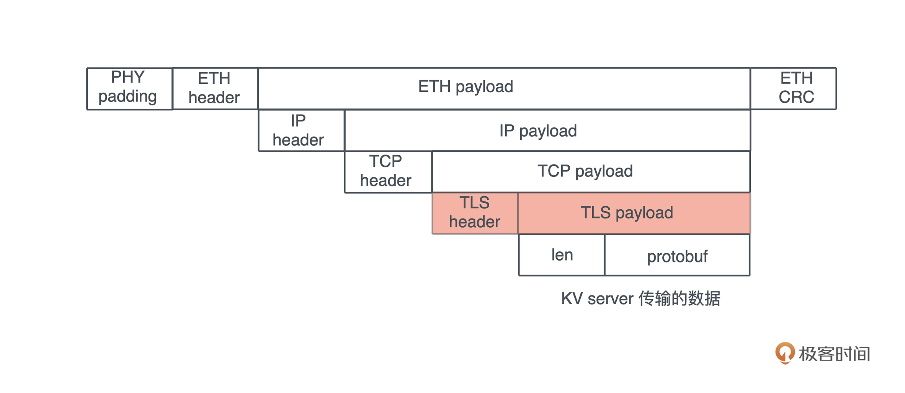

- 00 开篇词 让Rust成为你的下一门主力语言.md.html
- 01 内存：值放堆上还是放栈上，这是一个问题.md.html
- 02 串讲：编程开发中，那些你需要掌握的基本概念.md.html
- 03 初窥门径：从你的第一个Rust程序开始！.md.html
- 04 get hands dirty：来写个实用的CLI小工具.md.html
- 05 get hands dirty：做一个图片服务器有多难？.md.html
- 06 get hands dirty：SQL查询工具怎么一鱼多吃？.md.html
- 07 所有权：值的生杀大权到底在谁手上？.md.html
- 08 所有权：值的借用是如何工作的？.md.html
- 09 所有权：一个值可以有多个所有者么？.md.html
- 10 生命周期：你创建的值究竟能活多久？.md.html
- 11 内存管理：从创建到消亡，值都经历了什么？.md.html
- 12 类型系统：Rust的类型系统有什么特点？.md.html
- 13 类型系统：如何使用trait来定义接口？.md.html
- 14 类型系统：有哪些必须掌握的trait？.md.html
- 15 数据结构：这些浓眉大眼的结构竟然都是智能指针？.md.html
- 16 数据结构：Vec_T_、&[T]、Box_[T]_ ，你真的了解集合容器么？.md.html
- 17 数据结构：软件系统核心部件哈希表，内存如何布局？.md.html
- 18 错误处理：为什么Rust的错误处理与众不同？.md.html
- 19 闭包：FnOnce、FnMut和Fn，为什么有这么多类型？.md.html
- 20 4 Steps ：如何更好地阅读Rust源码？.md.html
- 21 阶段实操（1）：构建一个简单的KV server-基本流程.md.html
- 22 阶段实操（2）：构建一个简单的KV server-基本流程.md.html
- 23 类型系统：如何在实战中使用泛型编程？.md.html
- 24 类型系统：如何在实战中使用trait object？.md.html
- 25 类型系统：如何围绕trait来设计和架构系统？.md.html
- 26 阶段实操（3）：构建一个简单的KV server-高级trait技巧.md.html
- 27 生态系统：有哪些常有的Rust库可以为我所用？.md.html
- 28 网络开发（上）：如何使用Rust处理网络请求？.md.html
- 29 网络开发（下）：如何使用Rust处理网络请求？.md.html
- 30 Unsafe Rust：如何用C++的方式打开Rust？.md.html
- 31 FFI：Rust如何和你的语言架起沟通桥梁？.md.html
- 32 实操项目：使用PyO3开发Python3模块.md.html
- 33 并发处理（上）：从atomics到Channel，Rust都提供了什么工具？.md.html
- 34 并发处理（下）：从atomics到Channel，Rust都提供了什么工具？.md.html
- 35 实操项目：如何实现一个基本的MPSC channel？.md.html
- 36 阶段实操（4）：构建一个简单的KV server-网络处理.md.html
- 37 阶段实操（5）：构建一个简单的KV server-网络安全.md.html
- 38 异步处理：Future是什么？它和async_await是什么关系？.md.html
- 39 异步处理：async_await内部是怎么实现的？.md.html
- 40 异步处理：如何处理异步IO？.md.html
- 41 阶段实操（6）：构建一个简单的KV server-异步处理.md.html
- 42 阶段实操（7）：构建一个简单的KV server-如何做大的重构？.md.html
- 43 生产环境：真实世界下的一个Rust项目包含哪些要素？.md.html
- 44 数据处理：应用程序和数据如何打交道？.md.html
- 45 阶段实操（8）：构建一个简单的KV server-配置_测试_监控_CI_CD.md.html
- 46 软件架构：如何用Rust架构复杂系统？.md.html
- 加餐 Rust2021版次问世了！.md.html
- 加餐 代码即数据：为什么我们需要宏编程能力？.md.html
- 加餐 宏编程（上）：用最“笨”的方式撰写宏.md.html
- 加餐 宏编程（下）：用 syn_quote 优雅地构建宏.md.html
- 加餐 愚昧之巅：你的Rust学习常见问题汇总.md.html
- 加餐 期中测试：参考实现讲解.md.html
- 加餐 期中测试：来写一个简单的grep命令行.md.html
- 加餐 这个专栏你可以怎么学，以及Rust是否值得学？.md.html
- 大咖助场 开悟之坡（上）：Rust的现状、机遇与挑战.md.html
- 大咖助场 开悟之坡（下）：Rust的现状、机遇与挑战.md.html
- 特别策划 学习锦囊（一）：听听课代表们怎么说.md.html
- 特别策划 学习锦囊（三）：听听课代表们怎么说.md.html
- 特别策划 学习锦囊（二）：听听课代表们怎么说.md.html
- 用户故事 绝望之谷：改变从学习开始.md.html
- 用户故事 语言不仅是工具，还是思维方式.md.html
- 结束语 永续之原：Rust学习，如何持续精进？.md.html
- 捐赠
37 阶段实操（5）：构建一个简单的KV server-网络安全
你好，我是陈天。
上一讲我们完成了KV server整个网络部分的构建。而安全是和网络密不可分的组成部分，在构建应用程序的时候，一定要把网络安全也考虑进去。当然，如果不考虑极致的性能，我们可以使用诸如 gRPC 这样的系统，在提供良好性能的基础上，它还通过 TLS 保证了安全性。
那么，当我们的应用架构在 TCP 上时，如何使用 TLS 来保证客户端和服务器间的安全性呢？
生成 x509 证书
想要使用 TLS，我们首先需要 x509 证书。TLS 需要 x509 证书让客户端验证服务器是否是一个受信的服务器，甚至服务器验证客户端，确认对方是一个受信的客户端。
为了测试方便，我们要有能力生成自己的 CA 证书、服务端证书，甚至客户端证书。证书生成的细节今天就不详细介绍了，我之前做了一个叫 certify 的库，可以用来生成各种证书。我们可以在 Cargo.toml 里加入这个库：
[dev-dependencies]
...
certify = "0.3"
...
然后在根目录下创建 fixtures 目录存放证书，再创建 examples/gen_cert.rs 文件，添入如下代码：
use anyhow::Result;
use certify::{generate_ca, generate_cert, load_ca, CertType, CA};
use tokio::fs;
struct CertPem {
cert_type: CertType,
cert: String,
key: String,
}
#[tokio::main]
async fn main() -> Result<()> {
let pem = create_ca()?;
gen_files(&pem).await?;
let ca = load_ca(&pem.cert, &pem.key)?;
let pem = create_cert(&ca, &["kvserver.acme.inc"], "Acme KV server", false)?;
gen_files(&pem).await?;
let pem = create_cert(&ca, &[], "awesome-device-id", true)?;
gen_files(&pem).await?;
Ok(())
}
fn create_ca() -> Result<CertPem> {
let (cert, key) = generate_ca(
&["acme.inc"],
"CN",
"Acme Inc.",
"Acme CA",
None,
Some(10 * 365),
)?;
Ok(CertPem {
cert_type: CertType::CA,
cert,
key,
})
}
fn create_cert(ca: &CA, domains: &[&str], cn: &str, is_client: bool) -> Result<CertPem> {
let (days, cert_type) = if is_client {
(Some(365), CertType::Client)
} else {
(Some(5 * 365), CertType::Server)
};
let (cert, key) = generate_cert(ca, domains, "CN", "Acme Inc.", cn, None, is_client, days)?;
Ok(CertPem {
cert_type,
cert,
key,
})
}
async fn gen_files(pem: &CertPem) -> Result<()> {
let name = match pem.cert_type {
CertType::Client => "client",
CertType::Server => "server",
CertType::CA => "ca",
};
fs::write(format!("fixtures/{}.cert", name), pem.cert.as_bytes()).await?;
fs::write(format!("fixtures/{}.key", name), pem.key.as_bytes()).await?;
Ok(())
}
这个代码很简单，它先生成了一个 CA 证书，然后再生成服务器和客户端证书，全部存入刚创建的 fixtures 目录下。你需要 cargo run --examples gen_cert 运行一下这个命令，待会我们会在测试中用到这些证书和密钥。
在 KV server 中使用 TLS
TLS 是目前最主要的应用层安全协议，被广泛用于保护架构在 TCP 之上的，比如 MySQL、HTTP 等各种协议。一个网络应用，即便是在内网使用，如果没有安全协议来保护，都是很危险的。
下图展示了客户端和服务器进行 TLS 握手的过程，来源wikimedia：-
对于 KV server 来说，使用 TLS 之后，整个协议的数据封装如下图所示：- 
所以今天要做的就是在上一讲的网络处理的基础上，添加 TLS 支持，使得 KV server 的客户端服务器之间的通讯被严格保护起来，确保最大程度的安全，免遭第三方的偷窥、篡改以及仿造。
好，接下来我们看看 TLS 怎么实现。
估计很多人一听 TLS 或者 SSL，就头皮发麻，因为之前跟 openssl 打交道有过很多不好的经历。openssl 的代码库太庞杂，API 不友好，编译链接都很费劲。
不过，在 Rust 下使用 TLS 的体验还是很不错的，Rust 对 openssl 有很不错的封装，也有不依赖 openssl 用 Rust 撰写的 rustls。tokio 进一步提供了符合 tokio 生态圈的 tls 支持，有 openssl 版本和 rustls 版本可选。
我们今天就用 tokio-rustls 来撰写 TLS 的支持。相信你在实现过程中可以看到，在应用程序中加入 TLS 协议来保护网络层，是多么轻松的一件事情。
先在 Cargo.toml 中添加 tokio-rustls：
[dependencies]
...
tokio-rustls = "0.22"
...
然后创建 src/network/tls.rs，撰写如下代码（记得在 src/network/mod.rs 中引入这个文件哦）：
use std::io::Cursor;
use std::sync::Arc;
use tokio::io::{AsyncRead, AsyncWrite};
use tokio_rustls::rustls::{internal::pemfile, Certificate, ClientConfig, ServerConfig};
use tokio_rustls::rustls::{AllowAnyAuthenticatedClient, NoClientAuth, PrivateKey, RootCertStore};
use tokio_rustls::webpki::DNSNameRef;
use tokio_rustls::TlsConnector;
use tokio_rustls::{
client::TlsStream as ClientTlsStream, server::TlsStream as ServerTlsStream, TlsAcceptor,
};
use crate::KvError;
/// KV Server 自己的 ALPN (Application-Layer Protocol Negotiation)
const ALPN_KV: &str = "kv";
/// 存放 TLS ServerConfig 并提供方法 accept 把底层的协议转换成 TLS
#[derive(Clone)]
pub struct TlsServerAcceptor {
inner: Arc<ServerConfig>,
}
/// 存放 TLS Client 并提供方法 connect 把底层的协议转换成 TLS
#[derive(Clone)]
pub struct TlsClientConnector {
pub config: Arc<ClientConfig>,
pub domain: Arc<String>,
}
impl TlsClientConnector {
/// 加载 client cert/CA cert，生成 ClientConfig
pub fn new(
domain: impl Into<String>,
identity: Option<(&str, &str)>,
server_ca: Option<&str>,
) -> Result<Self, KvError> {
let mut config = ClientConfig::new();
// 如果有客户端证书，加载之
if let Some((cert, key)) = identity {
let certs = load_certs(cert)?;
let key = load_key(key)?;
config.set_single_client_cert(certs, key)?;
}
// 加载本地信任的根证书链
config.root_store = match rustls_native_certs::load_native_certs() {
Ok(store) | Err((Some(store), _)) => store,
Err((None, error)) => return Err(error.into()),
};
// 如果有签署服务器的 CA 证书，则加载它，这样服务器证书不在根证书链
// 但是这个 CA 证书能验证它，也可以
if let Some(cert) = server_ca {
let mut buf = Cursor::new(cert);
config.root_store.add_pem_file(&mut buf).unwrap();
}
Ok(Self {
config: Arc::new(config),
domain: Arc::new(domain.into()),
})
}
/// 触发 TLS 协议，把底层的 stream 转换成 TLS stream
pub async fn connect<S>(&self, stream: S) -> Result<ClientTlsStream<S>, KvError>
where
S: AsyncRead + AsyncWrite + Unpin + Send,
{
let dns = DNSNameRef::try_from_ascii_str(self.domain.as_str())
.map_err(|_| KvError::Internal("Invalid DNS name".into()))?;
let stream = TlsConnector::from(self.config.clone())
.connect(dns, stream)
.await?;
Ok(stream)
}
}
impl TlsServerAcceptor {
/// 加载 server cert/CA cert，生成 ServerConfig
pub fn new(cert: &str, key: &str, client_ca: Option<&str>) -> Result<Self, KvError> {
let certs = load_certs(cert)?;
let key = load_key(key)?;
let mut config = match client_ca {
None => ServerConfig::new(NoClientAuth::new()),
Some(cert) => {
// 如果客户端证书是某个 CA 证书签发的，则把这个 CA 证书加载到信任链中
let mut cert = Cursor::new(cert);
let mut client_root_cert_store = RootCertStore::empty();
client_root_cert_store
.add_pem_file(&mut cert)
.map_err(|_| KvError::CertifcateParseError("CA", "cert"))?;
let client_auth = AllowAnyAuthenticatedClient::new(client_root_cert_store);
ServerConfig::new(client_auth)
}
};
// 加载服务器证书
config
.set_single_cert(certs, key)
.map_err(|_| KvError::CertifcateParseError("server", "cert"))?;
config.set_protocols(&[Vec::from(&ALPN_KV[..])]);
Ok(Self {
inner: Arc::new(config),
})
}
/// 触发 TLS 协议，把底层的 stream 转换成 TLS stream
pub async fn accept<S>(&self, stream: S) -> Result<ServerTlsStream<S>, KvError>
where
S: AsyncRead + AsyncWrite + Unpin + Send,
{
let acceptor = TlsAcceptor::from(self.inner.clone());
Ok(acceptor.accept(stream).await?)
}
}
fn load_certs(cert: &str) -> Result<Vec<Certificate>, KvError> {
let mut cert = Cursor::new(cert);
pemfile::certs(&mut cert).map_err(|_| KvError::CertifcateParseError("server", "cert"))
}
fn load_key(key: &str) -> Result<PrivateKey, KvError> {
let mut cursor = Cursor::new(key);
// 先尝试用 PKCS8 加载私钥
if let Ok(mut keys) = pemfile::pkcs8_private_keys(&mut cursor) {
if !keys.is_empty() {
return Ok(keys.remove(0));
}
}
// 再尝试加载 RSA key
cursor.set_position(0);
if let Ok(mut keys) = pemfile::rsa_private_keys(&mut cursor) {
if !keys.is_empty() {
return Ok(keys.remove(0));
}
}
// 不支持的私钥类型
Err(KvError::CertifcateParseError("private", "key"))
}
这个代码创建了两个数据结构 TlsServerAcceptor/TlsClientConnector。虽然它有 100 多行，但主要的工作其实就是根据提供的证书，来生成 tokio-tls 需要的 ServerConfig/ClientConfig。
因为 TLS 需要验证证书的 CA，所以还需要加载 CA 证书。虽然平时在做 Web 开发时，我们都只使用服务器证书，但其实 TLS 支持双向验证，服务器也可以验证客户端的证书是否是它认识的 CA 签发的。
处理完 config 后，这段代码的核心逻辑其实就是客户端的 connect() 方法和服务器的 accept() 方法，它们都接受一个满足 AsyncRead + AsyncWrite + Unpin + Send 的 stream。类似上一讲，我们不希望 TLS 代码只能接受 TcpStream，所以这里提供了一个泛型参数 S：
/// 触发 TLS 协议，把底层的 stream 转换成 TLS stream
pub async fn connect<S>(&self, stream: S) -> Result<ClientTlsStream<S>, KvError>
where
S: AsyncRead + AsyncWrite + Unpin + Send,
{
let dns = DNSNameRef::try_from_ascii_str(self.domain.as_str())
.map_err(|_| KvError::Internal("Invalid DNS name".into()))?;
let stream = TlsConnector::from(self.config.clone())
.connect(dns, stream)
.await?;
Ok(stream)
}
/// 触发 TLS 协议，把底层的 stream 转换成 TLS stream
pub async fn accept<S>(&self, stream: S) -> Result<ServerTlsStream<S>, KvError>
where
S: AsyncRead + AsyncWrite + Unpin + Send,
{
let acceptor = TlsAcceptor::from(self.inner.clone());
Ok(acceptor.accept(stream).await?)
}
在使用 TlsConnector 或者 TlsAcceptor 处理完 connect/accept 后，我们得到了一个 TlsStream，它也满足 AsyncRead + AsyncWrite + Unpin + Send，后续的操作就可以在其上完成了。百来行代码就搞定了 TLS，是不是很轻松？
我们来顺着往下写段测试：
#[cfg(test)]
mod tests {
use std::net::SocketAddr;
use super::*;
use anyhow::Result;
use tokio::{
io::{AsyncReadExt, AsyncWriteExt},
net::{TcpListener, TcpStream},
};
const CA_CERT: &str = include_str!("../../fixtures/ca.cert");
const CLIENT_CERT: &str = include_str!("../../fixtures/client.cert");
const CLIENT_KEY: &str = include_str!("../../fixtures/client.key");
const SERVER_CERT: &str = include_str!("../../fixtures/server.cert");
const SERVER_KEY: &str = include_str!("../../fixtures/server.key");
#[tokio::test]
async fn tls_should_work() -> Result<()> {
let ca = Some(CA_CERT);
let addr = start_server(None).await?;
let connector = TlsClientConnector::new("kvserver.acme.inc", None, ca)?;
let stream = TcpStream::connect(addr).await?;
let mut stream = connector.connect(stream).await?;
stream.write_all(b"hello world!").await?;
let mut buf = [0; 12];
stream.read_exact(&mut buf).await?;
assert_eq!(&buf, b"hello world!");
Ok(())
}
#[tokio::test]
async fn tls_with_client_cert_should_work() -> Result<()> {
let client_identity = Some((CLIENT_CERT, CLIENT_KEY));
let ca = Some(CA_CERT);
let addr = start_server(ca.clone()).await?;
let connector = TlsClientConnector::new("kvserver.acme.inc", client_identity, ca)?;
let stream = TcpStream::connect(addr).await?;
let mut stream = connector.connect(stream).await?;
stream.write_all(b"hello world!").await?;
let mut buf = [0; 12];
stream.read_exact(&mut buf).await?;
assert_eq!(&buf, b"hello world!");
Ok(())
}
#[tokio::test]
async fn tls_with_bad_domain_should_not_work() -> Result<()> {
let addr = start_server(None).await?;
let connector = TlsClientConnector::new("kvserver1.acme.inc", None, Some(CA_CERT))?;
let stream = TcpStream::connect(addr).await?;
let result = connector.connect(stream).await;
assert!(result.is_err());
Ok(())
}
async fn start_server(ca: Option<&str>) -> Result<SocketAddr> {
let acceptor = TlsServerAcceptor::new(SERVER_CERT, SERVER_KEY, ca)?;
let echo = TcpListener::bind("127.0.0.1:0").await.unwrap();
let addr = echo.local_addr().unwrap();
tokio::spawn(async move {
let (stream, _) = echo.accept().await.unwrap();
let mut stream = acceptor.accept(stream).await.unwrap();
let mut buf = [0; 12];
stream.read_exact(&mut buf).await.unwrap();
stream.write_all(&buf).await.unwrap();
});
Ok(addr)
}
}
这段测试代码使用了 include_str! 宏，在编译期把文件加载成字符串放在 RODATA 段。我们测试了三种情况：标准的 TLS 连接、带有客户端证书的 TLS 连接，以及客户端提供了错的域名的情况。运行 cargo test ，所有测试都能通过。
让 KV client/server 支持 TLS
在 TLS 的测试都通过后，就可以添加 kvs和 kvc对 TLS 的支持了。
由于我们一路以来良好的接口设计，尤其是 ProstClientStream/ProstServerStream 都接受泛型参数，使得 TLS 的代码可以无缝嵌入。比如客户端：
// 新加的代码
let connector = TlsClientConnector::new("kvserver.acme.inc", None, Some(ca_cert))?;
let stream = TcpStream::connect(addr).await?;
// 新加的代码
let stream = connector.connect(stream).await?;
let mut client = ProstClientStream::new(stream);
仅仅需要把传给 ProstClientStream 的 stream，从 TcpStream 换成生成的 TlsStream，就无缝支持了 TLS。
我们看完整的代码，src/server.rs：
use anyhow::Result;
use kv3::{MemTable, ProstServerStream, Service, ServiceInner, TlsServerAcceptor};
use tokio::net::TcpListener;
use tracing::info;
#[tokio::main]
async fn main() -> Result<()> {
tracing_subscriber::fmt::init();
let addr = "127.0.0.1:9527";
// 以后从配置文件取
let server_cert = include_str!("../fixtures/server.cert");
let server_key = include_str!("../fixtures/server.key");
let acceptor = TlsServerAcceptor::new(server_cert, server_key, None)?;
let service: Service = ServiceInner::new(MemTable::new()).into();
let listener = TcpListener::bind(addr).await?;
info!("Start listening on {}", addr);
loop {
let tls = acceptor.clone();
let (stream, addr) = listener.accept().await?;
info!("Client {:?} connected", addr);
let stream = tls.accept(stream).await?;
let stream = ProstServerStream::new(stream, service.clone());
tokio::spawn(async move { stream.process().await });
}
}
src/client.rs：
use anyhow::Result;
use kv3::{CommandRequest, ProstClientStream, TlsClientConnector};
use tokio::net::TcpStream;
use tracing::info;
#[tokio::main]
async fn main() -> Result<()> {
tracing_subscriber::fmt::init();
// 以后用配置替换
let ca_cert = include_str!("../fixtures/ca.cert");
let addr = "127.0.0.1:9527";
// 连接服务器
let connector = TlsClientConnector::new("kvserver.acme.inc", None, Some(ca_cert))?;
let stream = TcpStream::connect(addr).await?;
let stream = connector.connect(stream).await?;
let mut client = ProstClientStream::new(stream);
// 生成一个 HSET 命令
let cmd = CommandRequest::new_hset("table1", "hello", "world".to_string().into());
// 发送 HSET 命令
let data = client.execute(cmd).await?;
info!("Got response {:?}", data);
Ok(())
}
和上一讲的代码项目相比，更新后的客户端和服务器代码，各自仅仅多了一行，就把 TcpStream 封装成了 TlsStream。这就是使用 trait 做面向接口编程的巨大威力，系统的各个组件可以来自不同的 crates，但只要其接口一致（或者我们创建 adapter 使其接口一致），就可以无缝插入。
完成之后，打开一个命令行窗口，运行：RUST_LOG=info cargo run --bin kvs --quiet。然后在另一个命令行窗口，运行：RUST_LOG=info cargo run --bin kvc --quiet。此时，服务器和客户端都收到了彼此的请求和响应，并且处理正常。
现在，我们的 KV server 已经具备足够的安全性了！以后，等我们使用配置文件，就可以根据配置文件读取证书和私钥。这样可以在部署的时候，才从 vault 中获取私钥，既保证灵活性，又能保证系统自身的安全。
小结
网络安全是开发网络相关的应用程序中非常重要的一个环节。虽然 KV Server 这样的服务基本上会运行在云端受控的网络环境中，不会对 internet 提供服务，然而云端内部的安全性也不容忽视。你不希望数据在流动的过程中被篡改。
TLS 很好地解决了安全性的问题，可以保证整个传输过程中数据的机密性和完整性。如果使用客户端证书的话，还可以做一定程度的客户端合法性的验证。比如你可以在云端为所有有权访问 KV server 的客户端签发客户端证书，这样，只要客户端的私钥不泄露，就只有拥有证书的客户端才能访问 KV server。
不知道你现在有没有觉得，在 Rust 下使用 TLS 是非常方便的一件事情。并且，我们构建的 ProstServerStream/ProstClientStream，因为有足够好的抽象，可以在 TcpStream 和 TlsStream 之间游刃有余地切换。当你构建好相关的代码，只需要把 TcpStream 换成 TlsStream，KV server 就可以无缝切换到一个安全的网络协议栈。
思考题
- 目前我们的 kvc/kvs 只做了单向的验证，如果服务器要验证客户端的证书，该怎么做？如果你没有头绪，可以再仔细看看测试 TLS 的代码，然后改动 kvc/kvs 使得双向验证也能通过吧。
- 除了 TLS，另外一个被广泛使用的处理应用层安全的协议是 noise protocol。你可以阅读我的这篇文章了解 noise protocol。Rust 下有 snow 这个很优秀的库处理 noise protocol。对于有余力的同学，你们可以看看它的文档，尝试着写段类似 tls.rs 的代码，让我们的 kvs/kvc 可以使用 noise protocol。
欢迎在留言区分享你的思考，感谢你的收听，如果你觉得有收获，也欢迎你分享给身边的朋友，邀他一起讨论。
恭喜你完成了第37次打卡，我们的Rust学习之旅已经过一大半啦，曙光就在前方，坚持下去，我们下节课见～
© 2019 - 2023 Liangliang Lee. Powered by gin and hexo-theme-book.